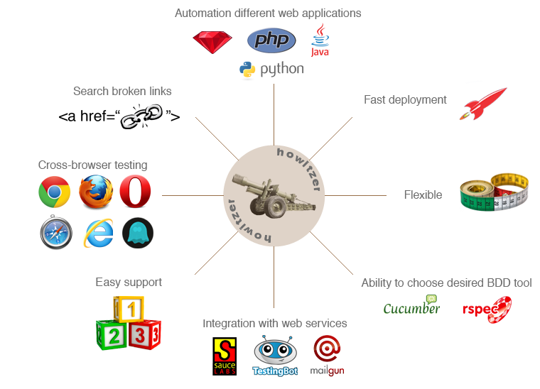

Are you tired of spending a lot of time, money and effort on acceptance test framework development? Want to focus on automated testing immediately? There is a perfect solution - Howitzer.
Howitzer uses the best practices and design patterns allowing to generate a test project in less than 5 minutes. It has out-of-the-box configurations for parallel cross-browser testing in the Cloud.
Do not reinvent a wheel! Just start using Howitzer to free your valuable time!
Key Benefits

Install Howitzer
Ruby gem installation:
$ gem install howitzer
New project creation:
$ howitzer new test_automation --cucumber